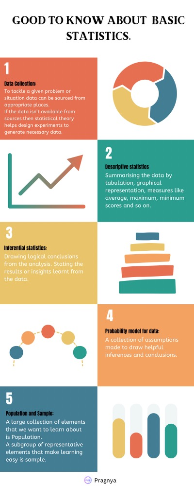

The Basics of Statistics.
The "what" and "why" of this world have always led us to numerous discoveries and inventions. So, let's start with the basics.
What is Statistics?
Statistics is the art of learning from data. It involves the collection, description, analysis, and drawing of conclusions from data.
Now, let's delve into each of these components.
What is Data Collection?
Statistics allows us to analyse a given set of data. In some cases the data is readily available that suits the requiremnets through various portals of different organisations. For example, government-published data on precipitation, unemployment rate, GDP, etc., can be examined for analysis on either of these. To explore available data, you can visit the Government of India's website: https://data.gov.in.
But what if the required data isn't readily available? In such cases, statistical theory helps design appropriate experiments to generate the necessary data.
For instance, let's say an instructor wants to study the effectiveness of two different teaching methods. The students can be divided into two groups, and their scores at the end can determine the best teaching method.
What is Descriptive Statistics?
After the experiment, the data should be summarised. This can be done through tabulation, graphical representation, and measures such as average score, maximum score, minimum score, range of scores, etc. This process of describing and summarising data is known as descriptive statistics.
To draw valid conclusions from the data, it's crucial to select it at random. That is, all possible choices of group members should be equally likely. Simply dividing the group into male or female students could lead to pitfalls, as we may become unaware victims of inherent patterns.
What is Inferential Statistics?
Once the data has been analyzed and described descriptively, the next step is to draw conclusions. This step is referred to as inferential statistics. In the example of teaching methods mentioned earlier, it's important to determine which teaching method is superior.
To draw logical conclusions, we must consider the possibility of chance. For instance, if the average score of one group is higher than the other, it could be attributed to the teaching method, or it may be a chance occurrence.
Drawing logical conclusions requires making assumptions about the probabilities of obtaining different data values. The collection of these assumptions is referred to as a probability model for data.
The nature of the data suggests the appropriate form of the probability model. Sometimes, a careful description and presentation of the data enable us to infer a reasonable model, which can be further verified with additional data.
What are Population and Sample?
When we seek information about a collection of elements, the entire collection is called a population. Often, the population is too large to examine each member individually, such as when it includes all residents of a state.
To overcome this, we select a subgroup of the population to study, which represents the entire population. This subgroup is called a sample.
A sample should be chosen to be informative about the total population.
For example, suppose we want to determine the age distribution of people residing in a city. If we collect the ages of the first 100 people entering the town library, and the average age turns out to be 46.2, is it justifiable to conclude that the entire population has an average age of 46? The library visitors may primarily consist of young students and senior citizens, while the working-age group may not be present at the given time. Hence, the sample chosen here does not represent the entire population.
Samples should be chosen randomly. Any non-random rule for sample selection often results in a dataset that is biased toward certain values over others.
Conclusion:
So here, we have explored the fundamentals of statistics, including data collection, descriptive statistics, inferential statistics, probability models, population, and samples. These concepts form the foundation of understanding and drawing meaningful insights from data.
However, it is important to note that there are still areas to explore, such as pitfalls and biases, which we have touched upon but not delved into in detail. These topics deserve further attention and exploration in future discussions.
Statistics empowers us to make informed decisions and uncover patterns and trends hidden within the data. By applying statistical techniques correctly, we can gain valuable insights, make accurate predictions, and solve complex problems across various fields.
As you continue your journey in statistics, remember to approach data with an open mind, be aware of potential biases, and employ rigorous methodologies to ensure the validity of your conclusions. With a solid grasp of statistical principles, you will be equipped to navigate the vast world of data analysis and contribute to the advancement of knowledge and understanding.
Happy exploring and may your statistical endeavours be fruitful!